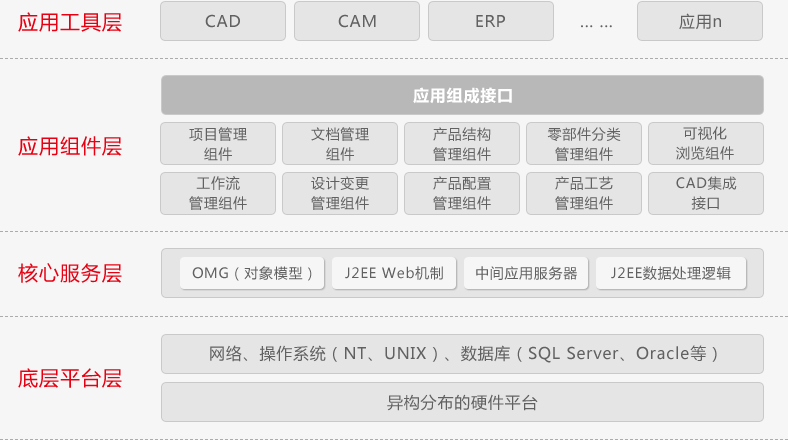

用友PLM企业研发创新管理平台帮助企业实现产品研发及设计过程中业务流程和产品数据的标准化管理，落地企业产品研发管理体系，改进产品研发业务流程，提高产品数据管理水平。用友PLM帮助企业实现技术信息化，同时为企业以实施ERP为主的管理信息化奠定基础，用友PLM既是企业的产品研发管理平台，更是企业研发、工艺与生产的数据共享桥梁。
通过用友PLM企业研发创新管理平台项目化管理企业所有产品研发设计，实现产品开发过程的规范化，缩短产品开发周期 ；流程化管控产品研发阶段，控制产品开发过程，保证产品研发质量；借助统一PLM产品研发管理平台实现各部门各专业的协同化作业，同时数据化管理产品研发过程成果，提高产品改型设计效率，搭建企业产品研发知识、经验和规范库，实现产品设计方法的规范化，产品数据的标准化，以便控制产品成本；全面深度集成用友ERP，实现产品设计、工艺和制造业务和数据的一体化，为生产制造及时、准确提供所需产品数据 。
用友PLM产品总体架构图

关键特性
用友PLM产品生命周期管理解决方案秉承以项目管理和任务管理为主线的业务过程管理和以BOM管理为主线的产品数据管理，通过任务的动态驱动，实现新产品开发过程管理和产品数据管理的矩阵式结合的产品研发管理思想；面向制造业新产品开发全过程，对产品开发中动态过程及过程中产生的数据进行有效管理。以产品为核心，实现对产品相关数据、过程和资源一体化集成管理。通过对业务和数据的整合来优化企业的开发过程和数据管理能力，提高企业产品设计知识、历史数据、成功经验的利用率，提高产品自主开发能力和开发效率。
用友PLM产品生命周期管理解决方案在企业应用价值可以概括为以下四个方面：
· 实现产品开发过程的规范化，缩短产品开发周期
规范研发产品开发流程，约束关键活动任务，组织好项目成果交付 ；
实时监控项目开发过程关键里程碑，追踪原因，合理协调资源；
· 控制产品开发过程，保证产品研发质量
建立企业知识和经验库，共享产品研发经验，预防产品研发质量错误；
实时验证项目开发过程成果正确性，做到事中管控，减少后续错误的发生；
建立产品问题跟踪机制，实现缺陷管理；
· 实现产品数据标准化，控制产品成本
实现零部件的统一管理，规范零部件设计，实现通用件系列化，提高零部件的重用率，控制其引用，减少物料种类，减少库存积压；
· 实现产品数据一体化，为生产及时、准确提供所需数据
通过数字化完整的产品结构，提高产品设计效率，保证产品数据的准确性；
保证设计与生产数据的统一，实现设计与生产数据的一体化互通，为生产及时提供准确的生产所需数据